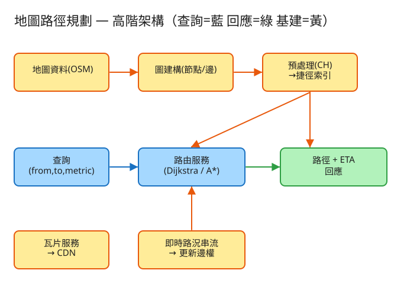

㊴ 地圖路徑規劃 (Google Maps) · 初學者友善版
L 圖/演算法
看故事就懂
輕鬆讀 30 分鐘
🧠 這份怎麼讀？
這份用「大腦比較好吸收」的方式重寫：先講生活比喻 → 把系統拆成小關卡 → 邊讀邊考自己。
分成兩部分：Part 1 概念（這系統在幹嘛）、Part 2 工程細節（怎麼真的蓋出來，一樣白話）。
遇到 💭 停一下 就先自己想 3 秒再往下看——這叫「提取練習」，比一直往下滑記得更牢。
1. 60 秒搞懂它在幹嘛
你打開 Google Maps，輸入「我在家、我要去公司」，不到一秒，它就畫出一條最快的路，還告訴你「塞車中，改走這條省 8 分鐘」。
聽起來理所當然，但背後其實很難：全世界的道路多到嚇人（幾億個路口、十幾億條路段），而且路況一直在變（這條剛塞、那條剛出車禍）。系統要在這團巨大的路網裡，毫秒內幫你算出最短/最快路，還要全球幾億人同時用。
🔑 一句話
地圖路徑規劃 = 在一張超巨大的「點線網」上，毫秒內找出兩點間最快的路：把路口當點、路段當線，用聰明的找路法 + 事先準備好的捷徑，讓查詢快到像瞬間完成。
2. 先把地圖變成「點和線」
電腦看不懂「地圖」這種彩色圖片，它只懂數字和關係。所以第一步，要先把地圖翻譯成它看得懂的東西。怎麼翻？用你早就懂的生活經驗——
🚇 比喻：捷運路線圖
看過捷運路線圖吧？上面就是一堆站（點），用線連起來，線上還寫著「這站到下一站幾分鐘」。
地圖也一樣：把每個路口當成一個「點」，每段路當成一條「線」，線上記著「這段有多長、開過去要幾秒」。
這種「一堆點，用有距離/時間的線連起來」的東西，在工程上有個名字叫 圖（graph）。注意它不是「圖片」的圖，而是「點線關係網」的意思。每條線上記的那個數字（長度或時間），叫「權重」——就是「走這條要付出的代價」。
於是「找最快的路」這件事，就變成一道清楚的數學題：在這張點線網上，從起點到終點，找一條「線上數字加起來最小」的走法。
💭 停一下：同一段路，「最短距離」和「最快時間」會是同一條路嗎？為什麼？
看答案
不一定。最短距離是看「公尺」，最快時間是看「秒」。一條巷子可能距離短，但限速低又會塞車，所以開過去反而比繞遠路的高速公路更慢。差別在於：每條線上記的「權重」用的是長度還是時間。換一種權重，最佳路線就可能不一樣。
3. 把找路拆成 3 個關卡
地圖變成點線網之後，「怎麼找路」就是核心。別被演算法的名字嚇到，其實就是闖 3 關，一關比一關聰明：
1笨方法：水往四面八方慢慢漫開（Dijkstra）
最直覺的找路法叫 Dijkstra。它怎麼運作？
💧 比喻：從起點倒一桶水
想像你在起點倒一桶水，水會沿著路往四面八方慢慢漫開，先淹近的、再淹遠的。
水最先漫到終點的那條路，就是最短的路——因為水永遠走最省力的方向先到。
這方法一定找得到最短路，很可靠。但問題是：它四面八方都漫，包括跟終點完全相反的方向也照漫不誤。在一張大陸級的路網裡，它可能要「漫過」上千萬個路口才漫到終點——太慢了，會等到天荒地老。
2聰明一點：帶著指南針找（A*）
Dijkstra 的笨，笨在「沒有方向感」。A*（念作 A-star）幫它裝上了一個指南針。
🧭 比喻：有指南針的探路
你在森林裡找出口，知道出口大概在東邊。你會優先往東探，而不是傻傻地東南西北都走一遍。
A* 就是這樣：它知道終點大概在哪個方向，於是優先朝終點方向找，少走很多冤枉路。
那個「指南針」其實很簡單：就是用直線距離猜「我離終點大概還有多遠」。雖然實際要沿著路彎彎繞繞，但直線距離給了個大方向。結果就是：A* 找到的路跟 Dijkstra 一樣是最短/最快，但探查的路口少很多，所以快很多。
劃重點Dijkstra 和 A* 找到的答案完全一樣，差別只在 A* 探更少的點、所以更快。這就是 demo 直接量給你看的數字。
3作弊神技：事先挖好捷徑（Contraction Hierarchies）
就算有指南針，要從台北算到高雄，A* 還是得探不少路口。能不能更快？能，靠「事先偷跑」。
🛣️ 比喻：事先蓋好高速公路
如果每次都要你沿途經過每一個小路口，當然慢。但如果有人事先幫你算好「從台北上交流道，直接這樣開就到高雄」，你查的時候就幾乎不用看中間那些小路口了。
這招叫 Contraction Hierarchies（簡稱 CH）：系統在你查詢之前，先花大把時間（離線慢慢算）把整張地圖預先處理一遍，建好一堆「捷徑」，把一堆小路口濃縮成一條直達的捷徑邊。等你真的查的時候，只要走這些預先挖好的捷徑，幾百個路口就搞定跨城市的路，而不是幾百萬個——所以快到毫秒級。
👉 一句話：用「事先慢慢算」換「查詢時飛快」。反正道路網不太常變，先算好一次，後面幾億次查詢全都受惠。
✅ 三關一句話
① 水漫法 Dijkstra（可靠但慢，沒方向感）→ ② 指南針 A*（朝終點找，少走冤枉路）→ ③ 事先挖捷徑 CH（離線偷跑，查詢飛快）。
4. 設計時最怕的 3 件事
工程上的「取捨」聽起來很抽象。換個方式記：這個系統最怕三件事，每個設計都是為了避開某個「怕」。
😱 怕「慢」
你輸入起訖點，等超過一秒就會覺得這 App 很爛。但路網大到天真找法要算好幾秒。所以系統寧可事先花好幾小時做預處理（挖捷徑），也要把你查詢的那一下壓進毫秒。離線辛苦，換線上飛快。
😱 怕「路況一直變」
這條路剛塞車、那條剛出車禍——路上的時間每分鐘都在變。但事先挖好的捷徑是按「舊時間」算的，路況一變就可能不準。所以系統把不變的東西（路長、路口）和會變的東西（塞車程度）分開存：路況變了只要乘一個係數重算，不用把整套捷徑重挖。把會變的和不變的分層。
😱 怕「算錯路」
如果為了快而抄捷徑抄過頭，算出一條其實不是最快的路，使用者繞了遠路會很不爽。所以那個「指南針」有個鐵規矩：絕對不能高估「還剩多遠」（寧可猜得保守一點）。只要不高估，A* 就保證找到的真的是最佳路線。快可以，但不能犧牲正確。
5. 一張圖看懂

✏️ 用 Excalidraw 開啟編輯（diagram.excalidraw）
白話導讀，由左到右一路看：
- 🗺️ 地圖原始資料（哪裡有路、限速多少）進來 →
- 🔧 圖建構把它翻譯成「點線網」（路口=點、路段=線、線上記長度/時間）→
- ⛏️ 預處理（CH）離線慢慢挖好一堆「捷徑」，存成捷徑索引 →
- 🚗 你送出查詢（從哪到哪、要最短還是最快）→ 路由服務用 A* + 捷徑搜尋 → 回你路徑 + 預計到達時間（ETA）→
- 🚦 旁邊有一條即時路況不斷流進來，改寫路段的「時間」，讓最快路自動避開塞車段 →
- 🖼️ 至於你螢幕上看到的底圖（那些彩色街道圖片），是另一套瓦片服務從 CDN 直接給你的，跟「算路」完全分開。
6. 名詞白話翻譯
看完上面，這些詞你其實都已經懂了，這裡只是把「工程術語 ↔ 白話」對起來，Part 2 會用到：
| 工程術語 | 白話解釋 |
|---|
| 圖 (graph) | 「點線關係網」（不是圖片）：路口是點、路段是線 |
| 節點 / 邊 | 節點=路口（點）；邊=路段（線） |
| 權重 | 線上記的數字：走這條的「代價」（長度或時間） |
| Dijkstra | 水從起點往外漫，最先漫到終點的就是最短路（可靠但慢） |
| A*（A-star） | 有指南針的找路：朝終點方向探，少走冤枉路 |
| 啟發式 (heuristic) | 那個「指南針」：用直線距離猜還剩多遠 |
| 可採納 (admissible) | 指南針的鐵規矩：不能高估剩餘距離，才保證找到最佳路 |
| Contraction Hierarchies (CH) | 事先挖好捷徑，讓查詢飛快 |
| 捷徑邊 (shortcut) | 把一串小路口濃縮成一條直達線 |
| ETA | 預計到達時間（路上所有路段的「時間」加起來） |
| 路況 / 壅塞係數 | 塞車程度：讓路段的「時間」變長的倍數 |
| 瓦片 (tile) | 你螢幕上看到的底圖，被切成一格一格的小圖片 |
| CDN | 把靜態圖片放到「離你最近的倉庫」，拿得快 |
| QPS | 每秒幾筆請求（衡量「多忙」的單位） |
| 水平擴展 | 不夠快就「多找幾台機器一起做」 |
🛠️ Part 2 ｜ 工程細節（一樣白話）
概念懂了，來看「真的要動手蓋，得想清楚哪些事」。一樣用比喻，不用怕。
7. 要準備多大？（規模估算）
🍱 比喻：辦活動前先估人數
辦活動前，你會先估「大概來幾個人」，才決定訂幾個便當、租多大場地。
系統設計也一樣：先估數字，才知道要準備多大的「料」。這一步叫規模估算。
我們估幾個關鍵數字（數字不必背，重點是感受它的「形狀」）：
| 估什麼 | 大概數字 | 所以呢？ |
|---|
| 地圖有多大 | 全球幾億個路口、十幾億條路段 | 整張圖大到一台機器裝不下，更不能每次都全圖搜尋 |
| 多少人在查路 | 每天約 10 億次查詢（尖峰每秒幾萬筆） | 算路的機器要能很多台一起扛 |
| 笨方法（Dijkstra）多慢 | 跨大陸要漫過上千萬路口 → 好幾秒 | 太慢，不能上線 |
| 挖好捷徑（CH）後多快 | 只展開幾百~幾千路口 → 不到 1 毫秒～幾毫秒 | 這才能撐起「秒查」的體驗 |
| 路況多久變一次 | 幾百萬路段，每幾秒～幾分鐘刷新 | 「時間」要能快速重算，但別動到「捷徑」 |
📚 關鍵洞察：先讀一輩子的書，考試時秒答
這系統的精髓是「讀書 vs 考試」：道路網很少變，所以平常花大把時間「讀書」（離線挖捷徑），
這樣「考試」時（你查詢的那一瞬間）才能秒答。因為查詢量是讀書量的幾億倍，先苦後甜超級划算。
💭 停一下：路況每分鐘都在變，為什麼不乾脆「每次路況一變，就把整套捷徑重新挖一遍」？
看答案
因為挖捷徑（CH 預處理）超級慢（大陸級要算幾十分鐘到幾小時），路況卻每幾秒就變一次——根本來不及重挖。所以聰明做法是把「不變的路長/路口拓樸」和「會變的塞車係數」分開：路況變了只要在原本的時間上乘一個係數重算，完全不用重挖捷徑。這就是進階版 CRP 在做的事。8. 系統之間怎麼溝通？（API）
🍔 比喻：點餐單
API 就是兩個系統之間講好的「點餐單格式」：你要點什麼（給我哪些欄位）、我回你什麼。
講好格式，雙方就能合作，不用知道對方廚房怎麼運作。
這題只要記住幾張「點餐單」：
① 查路徑（最重要，超高頻）
GET /route?from=起點&to=終點&metric=time ← time=最快 / distance=最短
我回：{ 路徑座標序列, 預計幾秒到(ETA), 全長幾公尺, 轉彎指示 }
這就是你每次按下「導航」時送出的單子。metric 決定要「最短距離」還是「最快時間」——換一個字，後台找路用的「權重」就不一樣，算出的路也可能不同。
② 更新即時路況（高頻，會改路段的「時間」）
POST /traffic 給我：{ 哪段路, 現在時速幾公里 }
塞車回報進來，系統就把那段路的「時間」調長，下次查路時最快路會自動避開它、改道，ETA 也跟著變。注意：這只影響「時間」，不影響「距離」（距離是地理上固定的）。
③ 更新道路圖（低頻，蓋新路才用）
POST /graph 給我：{ 新增哪些路口、哪些路段 }
蓋新路、拓寬道路才會用到。因為這會動到「拓樸」，可能要重挖捷徑，所以低頻、離線批次做。
④ 拿底圖（海量，走 CDN）
GET /tiles/{z}/{x}/{y}.png ← z=縮放層級, x/y=哪一格
你螢幕上的彩色街道圖。它是靜態圖片（不會變），所以全部丟到 CDN（離你最近的倉庫），跟「算路」完全分開——免得看地圖的流量拖垮算路的機器。
9. 系統要記住哪些事？（資料模型）
📒 比喻：幾本筆記本
系統要把資料記在「筆記本」（資料表）裡。重點是把「不變的」和「會變的」分開放，這題大致這幾本：
📍路口簿（點）
每個路口一列：路口ID、經緯度。經緯度有兩個用途：① 畫在地圖上給你看；② 當指南針用——A* 靠它算「直線距離」猜還剩多遠。
🛣️路段簿（線，不太會變）
每段路一列：從哪個路口、到哪個路口、長幾公尺、正常開要幾秒、路別(高速/大道/巷弄)。
這些幾乎不變（除非蓋新路），所以可以放心拿去挖捷徑。
🚦路況簿（會變，跟路段分開放）
每段路的塞車程度：哪段路、壅塞係數。實際時間 = 正常時間 × 壅塞係數。
故意跟路段簿分開——這樣路況每分鐘狂變，也只是改這本薄薄的簿子，動不到「路段簿」和「捷徑」。
⛏️捷徑簿（CH 預處理的產物）
離線挖好的捷徑：從哪到哪、這條捷徑要多少代價、它其實跳過了哪些路口、階層等級。
查詢時就是靠這本，幾百個路口搞定跨城市的路。
10. 哪裡會塞車、怎麼拓寬？（擴展）
🚗 比喻：找出塞車路段，拓寬它
系統變大時，總有某個環節會先「塞車」。工程師的工作就是找出最會塞的地方，把它拓寬。一個一個看：
| 哪裡會塞車 | 怎麼拓寬 |
|---|
| 整張全球圖一台機器裝不下 | 把地圖切成一塊一塊（分區），跨區時只在邊界拼接 |
| 長程查詢漫太多路口、太慢 | 用 A* 指南針剪枝 + CH 捷徑，把秒級壓成毫秒級 |
| 查的人太多，算路機器 CPU 爆掉 | 算路機器無狀態 → 多開幾台一起扛（水平擴展），熱門路線結果快取起來重複用 |
| 蓋新路就要重挖整套捷徑 | 道路很少變，離線批次挖；用 CRP 把「拓樸層」和「路況層」分開，只重跑會變的那層 |
| 路況高頻變動，捷徑卻不好即時更新 | 路況和拓樸分層（CRP）；或近處用即時 A*、遠處仍用預挖好的捷徑 |
| 看地圖的底圖流量爆量 | 底圖是靜態圖片，全進 CDN，跟算路完全分開，互不拖累 |
11. 還有哪些「魚與熊掌」？（取捨）
「Part 1 的三個怕」是核心取捨。這裡補幾個常被面試官追問的：
⚖️ 事先挖捷徑 vs 不挖
挖捷徑（CH）要花好幾小時離線預處理，但查詢飛快；不挖則省事，但長程查詢慢。查的人越多越該挖——一次辛苦換幾億次受惠。
⚖️ 最短 vs 最快 vs 即時
最短距離是固定值，可以全力挖捷徑；最快時間吃即時路況、會一直變，預處理結構必須能容忍變動（這就是難點，用 CRP 分層解）。
⚖️ 精準 vs 快（指南針可不可以說謊）
指南針老實不高估 → 保證最佳路，但剪枝有限；故意讓它「高估一點」 → 找路更快但可能不是最佳路。導航實務上常接受「夠好就好」的近似，換取更快的速度。
💭 追問：單行道、不能左轉怎麼處理？
把「線」變成有方向的（單行道就只存一個方向）；轉彎限制則在「點」上加轉彎成本（不能左轉就把那個轉法的代價設成超大，找路時自然會避開）。💭 追問：要避開收費站、避開高速怎麼辦？
在對應路段的「權重」上加一筆懲罰（收費站就讓它「代價」變高），或乾脆把那類路段過濾掉，在剩下的子圖上找路。12. 動手玩玩看
讀十遍不如玩一遍。這題有一個真的可以跑的小程式，讓你親眼看到「Dijkstra vs A* 差在哪」：
# 啟動（在這題的 demo 資料夾裡）
cd demo
php -S localhost:8039 -t public
# 然後瀏覽器打開 http://localhost:8039
- 選一個起點和終點（裡面塞了一個 6×5 的格狀小城市）。
- 按「比較」→ 看 Dijkstra 和 A* 各自探了幾個路口（A* 通常少很多）。
- 對路徑上某段套上塞車 → 看最快路怎麼自動改道、ETA 怎麼變。
玩的時候想一下選一個在格網中段的終點，A* 的「指南針優勢」最明顯；選對角線角落則是 A* 的最壞情況（方向感幫不上忙）。另外把同一段路套上塞車，看「最快路」改道但「最短路」不動——這就是「時間會變、距離不變」在運作。
註：demo 是 30 路口的小圖，Dijkstra / A* / 路況改 ETA 都是真的可跑；CH 捷徑在這麼小的圖上看不出差異，所以只在筆記裡講觀念、demo 沒實作。
13. 考考自己
先不要看答案，自己用講給朋友聽的方式回答看看（講得出來才是真的懂）：
Q1：為什麼要先把「地圖」變成「點和線」？這東西叫什麼？
因為電腦看不懂彩色地圖，只懂數字和關係。把路口當點、路段當線、線上記長度/時間，就變成電腦能算的「圖（graph）」。找路就變成「在點線網上找一條線上數字加起來最小的走法」。Q2：用「倒水」和「指南針」解釋 Dijkstra 和 A* 的差別。
Dijkstra 像從起點倒水四面八方慢慢漫，最先漫到終點的就是最短路——可靠但沒方向感、探超多點。A* 裝了指南針（用直線距離猜還剩多遠），優先朝終點方向探，少走冤枉路。兩者答案一樣，但 A* 探更少點、更快。Q3：CH（事先挖捷徑）為什麼能讓查詢快到毫秒？用「讀書 vs 考試」說說看。
道路網很少變，所以平常先花大把時間離線「讀書」——把一串小路口濃縮成直達捷徑。等你查詢「考試」時，只走這些預挖好的捷徑，幾百個路口就搞定跨城市的路，不用漫過幾百萬個，所以是毫秒級。先苦後甜，因為查詢量是預處理量的幾億倍。Q4：塞車回報進來，為什麼「最快路」會改道但「最短路」不動？
塞車只讓路段的「時間」變長，不影響「距離」（距離是地理固定值）。所以用「時間」當權重找的最快路會避開塞車段、改道；用「距離」當權重找的最短路完全不受影響。Q5（工程）：路況每分鐘都在變，為什麼資料模型要把「路段簿」和「路況簿」分開存？
因為挖捷徑（CH 預處理）超慢、來不及每次重挖。把不變的路長/拓樸（路段簿）和會變的塞車係數（路況簿）分開，路況變了只要改薄薄的路況簿、乘個係數重算，完全動不到路段簿和捷徑。這就是「會變/不變分層」。Q6（工程）：那個「指南針」（啟發式）為什麼絕對不能「高估」剩餘距離？
因為只要指南針不高估（保守一點，例如用直線距離，直線一定不比繞路長），A* 就保證找到的是真正的最佳路。一旦高估，A* 雖然更快，但可能算出一條其實不是最快的路，使用者就被帶去繞遠路了。Q7（工程）：為什麼底圖「瓦片」要丟 CDN，跟算路機器分開？
底圖是靜態圖片（不會變、可永久快取），而且看地圖的流量超大。把它全丟到 CDN（離使用者最近的倉庫）直接送，就不會讓「看地圖」的海量流量拖垮「算路」的機器——兩件事互不干擾、各自擴展。14. 30 秒回顧
地圖路徑規劃 = 在一張超巨大的「點線網」上，毫秒內找出兩點間最快的路。
3 個關卡：① 倒水法 Dijkstra（可靠但沒方向感）→ ② 指南針 A*（朝終點探、少走冤枉路）→ ③ 事先挖捷徑 CH（離線偷跑、查詢飛快）。
3 個怕：怕慢（離線挖捷徑換線上毫秒）、怕路況變（把會變/不變分層存）、怕算錯路（指南針絕不高估，保證最佳路）。
工程細節一句話：先估「讀書 vs 考試」般的爆量讀取 → 用「點餐單(API)」溝通、查路回路徑+ETA → 幾本筆記本（路口/路段/路況/捷徑）把會變的和不變的分開 → 找出塞車環節各自拓寬，底圖瓦片丟 CDN 與算路解耦。
想看更精簡、面試速查用的版本？👉 前往完整版（同樣內容的工程速查格式）。